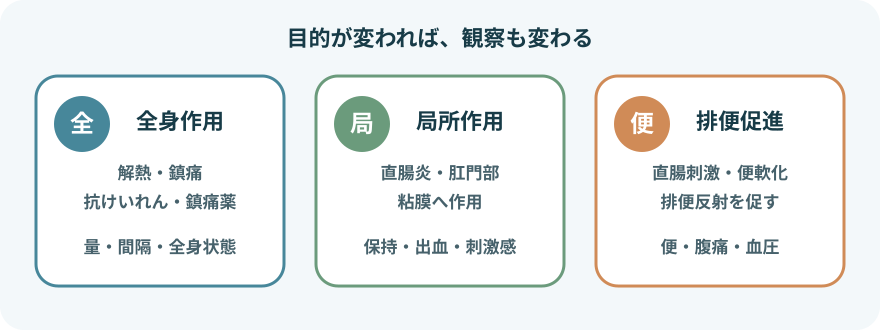
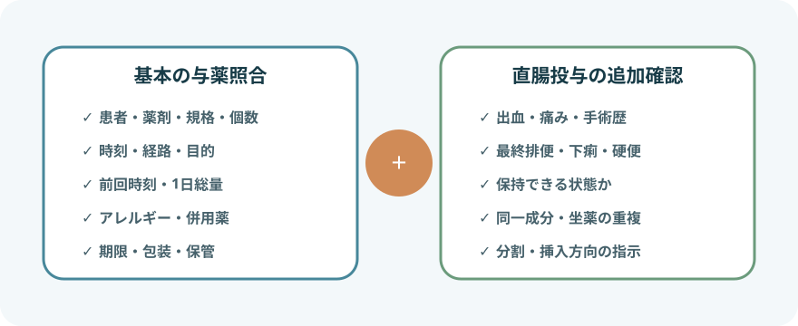
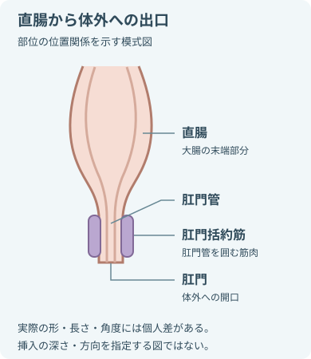

直腸内与薬を分けて考える

坐薬の目的によって変わる項目
- 投与前の確認
- 保持したい時間
- 観察する効果
- 全身作用
解熱・鎮痛や抗けいれんなどを目的に用いる。
投与前の確認- 投与量
- 投与間隔
- 他経路との重複
- 局所作用
- 直腸炎・肛門部症状などに用いる。
- 患部への到達と保持が重要になる。
- 排便促進
- 直腸刺激や便軟化を利用する。
- 便の位置・硬さと急性腹症の除外を確認する。
- 坐薬以外の直腸内投与製剤
- 液体
- 泡
- ゲル
- 注腸製剤
製剤によって異なる方法- 容器の挿入
- 注入量
- 保持方法
- このページは固形坐薬の基本を扱う。
投与前に中止・確認する状態
処方があっても、その場の状態を確認する
- 腹部・消化管の確認
- 原因不明の強い腹痛
- 腹部膨満
- 悪心・嘔吐
- 排ガス停止
- 急性腹症・腸閉塞の疑い
- 肛門・直腸の確認
- 新しい直腸出血
- 強い肛門痛
- 裂創
- 潰瘍性痔核
- 重い直腸炎
- 直腸・肛門手術直後
- 感染・出血リスクが高い状態
- 好中球減少
- 血小板減少
- 粘膜障害
- 挿入による感染・出血リスクを評価する。
- 投与の可否を確認する。
- 粘膜損傷のおそれ
- 直腸内の硬便
- 狭窄
- 抵抗
無理に挿入せず、投与の可否を確認する。
- 薬剤固有の確認
- 禁忌
- アレルギー
- 臓器障害
- 妊娠
- 併用薬の問題
薬剤と患者を照合する

通常の与薬照合に加える確認
- 直腸の状態
- 最終排便
- 保持可能性
- 同じ成分の重複
- 同じ剤形の重複
- 与薬の照合
- 患者
- 薬剤名・成分
- 規格
- 個数
- 直腸内経路
- 投与時刻
- 目的
- 投与履歴と条件
- 前回投与時刻
- 1日総量
- 頓用条件
- 効果・副作用歴
- 重複を確認する薬
- 経口薬
- 注射薬
- 市販薬
これらを含む同一成分の重複を確認する。
- 患者の状態
- 年齢・体重
- 肝腎機能
- 呼吸・意識
- アレルギー
- 妊娠
- 排便・肛門直腸の状態
- 最終排便
- 便意
- 下痢
- 肛門・直腸症状
- すぐ排便する可能性
- 製品の状態
- 保管状態
- 期限
- 包装破損
- 軟化・変形
- 必要時の分割指示
- 坐薬を分割してよいとは限らない。
- 分割前に製品ごとに確認
- 含量の均一性
- 切り方
- 残薬の保存
処方・薬剤師の指示なしに切らない。
必要物品と準備
- 指示された坐薬
- 非滅菌手袋
- 必要時エプロン
- 製品で使用可能な水溶性潤滑剤または水
- 防水シート
- ティッシュ
- 清拭用品
- 廃棄物袋
- 必要時、便器
- 必要時、ポータブルトイレ
- 必要時、おむつ
- 体温計
- 血圧計
- パルスオキシメータ
- 説明して同意を得る
- 説明する内容
- 目的
- 方法
- 予想される感覚
- 投与後の体位
- ナースコール
- 羞恥心と過去のつらい経験へ配慮する。
- 排泄と投与の順番を決める
- 排便促進薬以外では、便意があれば先に排便できるか確認する。
- 複数の坐薬は投与順と間隔を確認する。
- プライバシーと体位を整える
- 左側臥位を基本に上側の膝を軽く曲げる。
- 小児や体位制限では、安全で無理のない姿勢に調整する。
坐薬投与の手順

- 直腸と体外の間に肛門管があり、その周囲に括約筋がある。
- 部位を理解するための図で、挿入の深さ・方向を指定しない。

- 手指衛生と最終照合投与直前の再確認
- 患者
- 薬剤
- 規格
- 個数
- 時刻
- 経路
再確認し、手袋を着ける。
- 肛門周囲を観察する肛門周囲の観察
- 皮膚障害
- 出血
- 裂創
- 痔核
- 便の付着
必要性のない直腸診は行わない。
- 包装を外し、必要時に潤滑する
- 坐薬を汚染しないよう取り出す。
- 潤滑剤の可否と種類は電子添文・製品指示に従う。
- 油性剤を自己判断で使わない。
- 方向を確認する
- 先端側・太い側のどちらから入れるかは製品指示を確認する。
- 薬剤が違えば挿入方向も同じとは限らない。
- 呼気に合わせてゆっくり挿入する
- 臀部を開き、肛門の方向へ沿わせ、括約筋を越える位置まで進める。
- 挿入を中止する徴候
- 強い抵抗
- 鋭い痛み
- 出血
これらがあれば中止する。
- 保持できるよう整える
- 臀部を戻し、必要時は短時間軽く合わせる。
- 薬剤に必要な時間、安楽な体位を保つが、強い苦痛を我慢させない。
- 片づけ、手指衛生、再評価
- 包装と手袋を廃棄し、患者を整える。
直後の確認- 投与時刻
- 排出の有無
- 直後の症状
坐薬が出た・排便したとき
自動的にもう1個入れない
- 直後に未変形の坐薬が確認できたとき確認する指示
- 製品指示
- 処方
- 再投与の可否を医師・薬剤師へ相談する。
- 吸収量を判断できない状態
- 一部溶けた
- 便中に見えない
- 時間が不明
追加投与しないで確認する。
- 下痢・頻回便が続くとき評価すること
- 効果が得られない可能性
- 脱水
- 薬剤副作用
- 排便促進坐薬
便意と排便は期待する作用。
排便時の観察- 便量・性状
- 腹痛
- 出血
- 気分不良
薬剤によって変わる重要点
アセトアミノフェン坐剤
- 小児では体重から1回量と1日総量を確認する。
- 下記を含め、アセトアミノフェンの重複を避ける。
重複確認に含める薬
- 内服
- 注射
- 市販薬
観察
- 体温
- 疼痛
- 発疹
- 呼吸
- 意識
- 肝障害の兆候
ビサコジル坐薬
投与しない状態
- 急性腹症
- 痙攣性便秘
- 重い硬結便
- 肛門裂創
- 潰瘍性痔核
これらがある場合は投与しない。
観察
- 腹痛
- 直腸刺激
- 出血
- 顔色
- 冷汗
- 血圧低下
ジアゼパム坐剤
投与前の確認
- 指示された発作・発熱条件
- 体重
- 前回投与時刻
投与後の観察
- 眠気
- ふらつき
- 呼吸数・深さ
- SpO₂
- 意識
- アセトアミノフェン坐剤との併用は、投与順と間隔を指示どおりにする。
ジクロフェナク坐剤
NSAIDsの禁忌・相互作用は直腸投与でも消えない。
投与前の確認
- 消化管潰瘍
- 血液・肝腎・心機能
- アスピリン喘息
- 妊娠
- 併用薬
投与後の観察
- 過度の体温低下
- 血圧低下
- 喘息
- 消化管出血
複数の坐薬を使うとき
同時に入れない
- 薬剤の基剤が他剤の溶解・吸収へ影響することがある
- ジアゼパム坐剤とアセトアミノフェン坐剤では、一般にジアゼパムを先に投与し、30分以上あける指示が用いられる
- 複数坐薬の投与順・間隔を確認
- 処方
- 患者向け説明書
- 薬剤師の指示
一律の順番にせず、指示に従う。
- 投与時刻をそれぞれ記録し、誰が次の薬を投与するか申し送る
投与後の観察
- 共通
- 坐薬の排出
- 肛門痛・出血
- 腹痛
- 悪心
- 発疹
- 呼吸
- 循環
- 意識
- 解熱鎮痛
- 体温
- 疼痛
- 活動性
- 水分摂取
体温だけを下げる目的で過量にしない。
- 抗けいれん
- 発作
- 意識
- 眠気
- 呼吸抑制
- ふらつき・転倒
- 排便促進
- 効果発現までの時間
- 便量・性状
- 腹痛
- 下痢
- 残便感
- 血圧変動
- 局所治療
- 保持できた時間
- 症状
- 出血・粘液
- 刺激感
報告・記録
- 投与内容の記録
- 薬剤名
- 規格
- 個数
- 経路
- 投与時刻
- 投与目的
- 投与前の記録
- 症状
- 体温
- 疼痛
- 発作
- 排便状況
- 肛門直腸所見
- 投与中の記録
- 体位
- 挿入の難易度
- 痛み
- 抵抗
- 出血
- 保持・排出状況
- 投与後の記録
- 効果発現時刻
- 効果
- 副作用
- 排便量・性状
- 判断・対応の記録
- 複数坐薬の順番と間隔
- 再投与判断
- 報告先
- 対応
出典
- NCI「What Is Anal Cancer?」肛門管と括約筋の解剖
- NIDDK「Your Digestive System & How It Works」
- PMDA「アンヒバ坐剤小児用50mg・100mg・200mg」
- PMDA「テレミンソフト坐薬10mg」
- PMDA「ダイアップ坐剤4・6・10」
- PMDA「ボルタレンサポ12.5mg・25mg・50mg」
- 国立成育医療研究センター「お薬Q&A：坐薬について」
- National Cancer Institute「Gastrointestinal Complications：Rectal agents」
- NHS「Rectal examination」